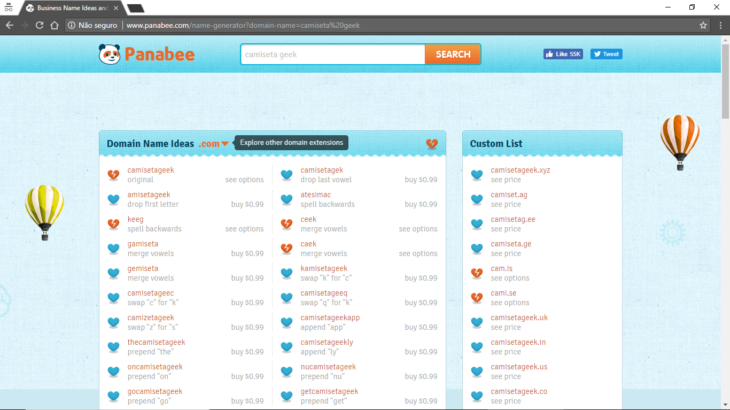
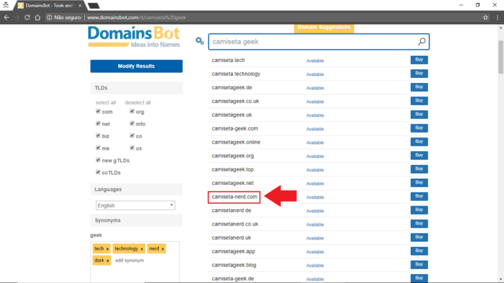
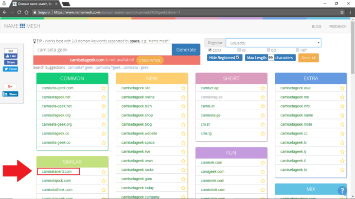
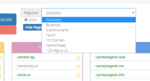
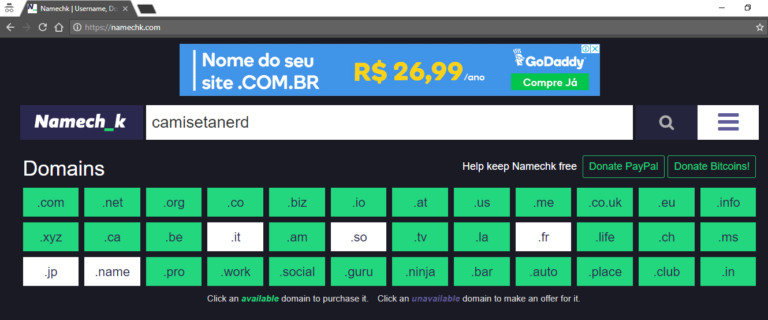
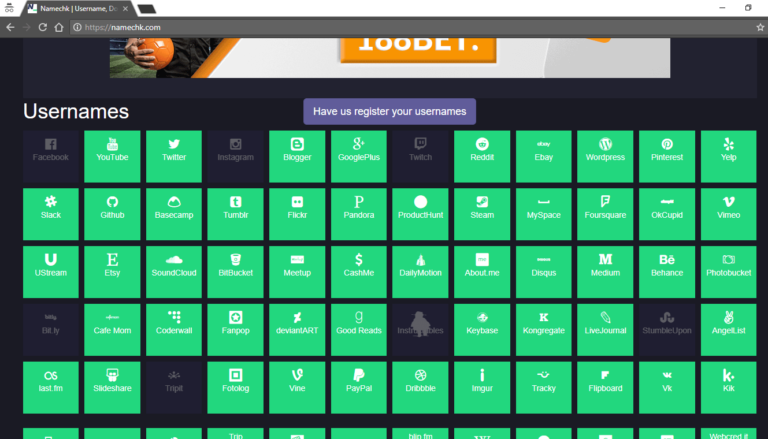

Escolhendo um domínio de site para meu negócio
Neste post vamos apresentar algumas ferramentas que podem te ajudar não apenas na escolha de domínio do seu site, quanto na escolha par redes sociais também, avaliando nomes que estejam disponíveis.
Definindo o domínio de site
Algumas pessoas perdem tempo escolhendo um domínio de site para seu negócio e verificando a disponibilidade do mesmo. Embora esse seja um item importante para aumentar sua presença online, é sempre bom o uso de ferramentas que agilizem este processo. Neste post vamos apresentar 4 ferramentas com o propósito de te ajudar nesta tarefa.
A escolha do domínio
As 3 primeiras ferramentas tem como funcionalidade principal ajuda na escolha do domínio de site. O usuários fornece de 2 a 3 palavras e elas trabalham combinações e vêem a disponibilidade dos domínios. Nos nossos exemplos vamos considerar uma loja de camisetas para pessoas que gostam de tecnologia. Portanto vamos usar as palavras “camiseta” e “geek” para trabalhar com as ferramentas.
1ª ferramenta – Panabee
Começando pela ferramenta mais simples e mais limitada. A Panabee é uma ferramenta que tenta combinar as palavras informadas por você e, caso não haja disponibilidade de domínio, exibe sugestões. O problema, no entanto, é que as sugestões são pouco inteligentes e apenas misturam as letras de uma das palavras. Na imagem abaixo, conseguimos ver o exemplo do resultado da nossa pesquisa de domínio de site.

Na imagem é possível ver que, como o “camisetageek.com” não está disponível, ele tenta sugerir opções. No entanto, logo na segunda opção vemos uma sugestão estranha: “amiseteriageek.com”. A ferramenta apenas tirou a letra “c” do início do domínio, sem avaliar a semântica do domínio do site. Além disso, o foco da ferramenta é nas opções de domínio “.com”. Assim, são exibidas poucas opções de outros domínios no painel “Custom List” disponível no lado direito da tela.
2ª ferramenta – Domains Bot
A segunda ferramenta tem funcionamento similar, então ela mostra opções de domínio de site. No entanto ela mostra opções mais inteligentes, encontrando inclusive palavras similares. No exemplo abaixo, não encontrando “camisetageek.com” disponível ele sugere “camiseta-nerd.com”. Isto é, ele identificou similaridade entre as palavras “geek” e “nerd”.

Outra vantagem dessa ferramenta é a possibilidade de selecionar várias TLDs (top-level domain, da sigla em inglês), como “.com”, “.net” e “.org”. No entanto, a ferramenta não sugeriu “camisetanerd.com” (sem o hífen), que também está disponível. Ao escolher a opção “Buy” de uma das opções exibidas ele exibe diversos provedores de registro de domínio de site e os respectivos preços. Mais um ponto positivo.

3ª ferramenta – Name Mesh
Na terceira opção de ferramenta para definição de domínio de site temos várias vantagens. Ele divide as sugestões em categorias como “Common”, “Similar” e “Short”. Neste caso ele identificou a disponibilidade da opção “camisetanerd.com”.

Outra vantagem da ferramenta é que ela também mostra várias opções para o registro do domínio. Apesar disso, ela não apresenta os preços, como o Domains Bot.

Apesar de serem ótimas ferramentas e ajudarem na escolha de domínio de site a partir de uma palavra chave, estes sites não trabalham com a TLD “.com.br”. Para verificar a disponibilidade de domínios com essa extensão o ideal é usar algum provedor de hospedagem (Hostinger, Hostgator, Locaweb, etc.) ou o próprio Registro.br.
Checando disponibilidade de redes sociais
4ª ferramenta – Namech_k
A quarta e última ferramenta tem função um pouco diferente. Não vai ser possível fornecer palavras separadas e receber sugestões, como as outras 3, mas além da disponibilidade do domínio, ela verifica a disponibilidade de várias redes sociais, como Facebook, Instagram, Twitter, YouTube, etc.

Neste exemplo acima, vemos a disponibilidade do termo “camisetanerd”. Ele diferencia em verde as redes que possuem disponibilidade.

A escolha do domínio de site para o seu negócio é um passo importante para se posicionar corretamente para seus clientes e para melhorar sua presença online. No entanto, não há motivo para não usarmos ferramentas que facilitem e agilizem este processo.
No vídeo abaixo, no canal do Presença Online .NET no YouTube, você pode ver como foram feitas as consultas descritas neste post.